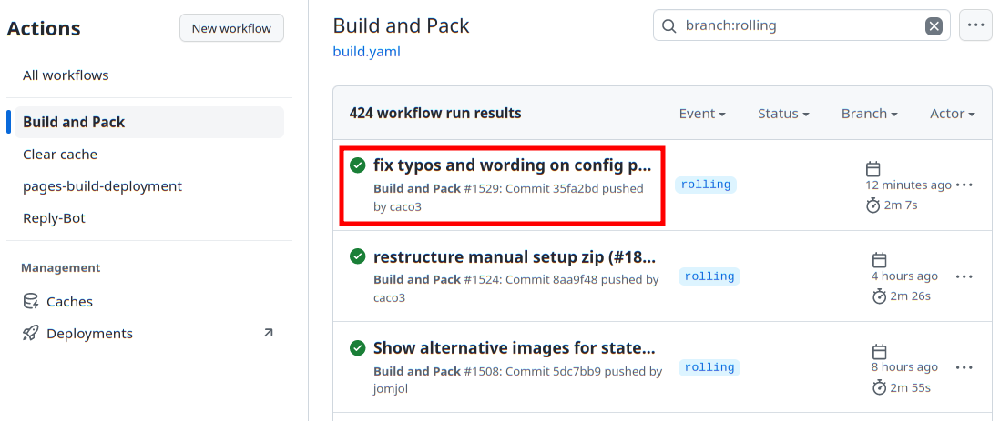
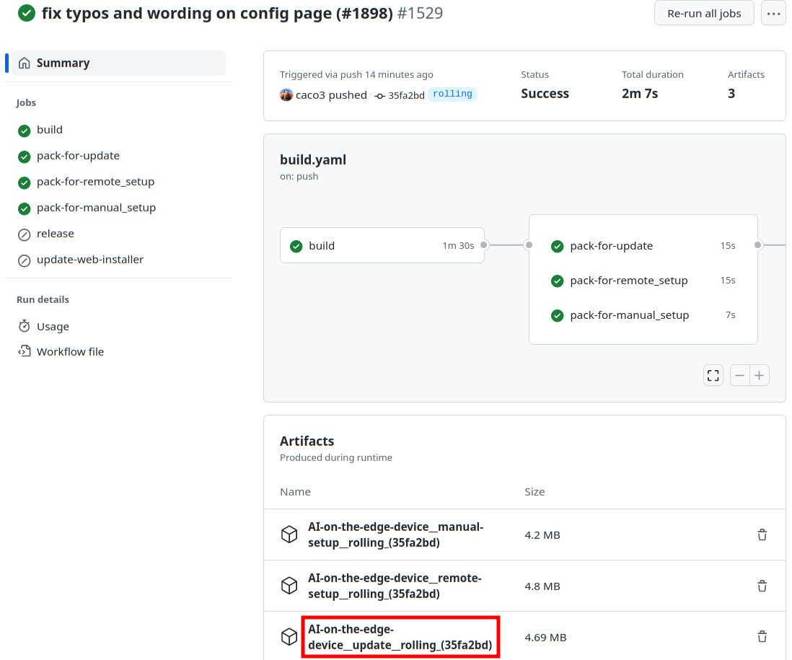

1. Living on the Edge
The Github repository contains multiple branches:
- The master branch contains the same firmware version as provided on the release page.
- The rolling branch contains the latest version of the Firmware and the Web Interface. It might already contain a fix for your issue. But it is work in progress, don't expect it to work stable or be an improvement for your AI-on-the-edge-device! Also it might break the OTA Update and thus require manual flashing over USB!
- Any other branch is used to develop a feature or fix, only use them when you know what it is about!
1.1 I still want to try it
Ok, then grab the latest rolling build from Github Actions Page and proceed as following:
- Pick the most top successful (green) build: 
- Scroll down and download the
AI-on-the-edge-device__update__*.zip:  - Flash the zip file using the OTA Update page of your device.